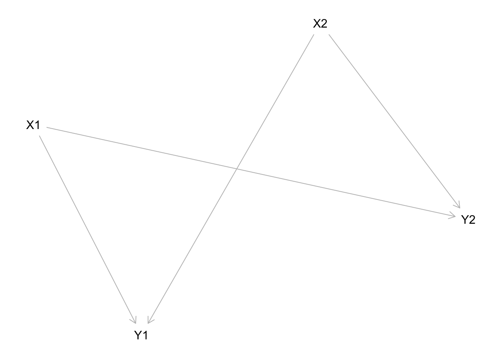

Chapter 9 Integrated inferences
We extend the analysis of Chapter 7 to cases with population data. In these cases we get to learn about the distribution of causal effects and are able to update the models we use for case level inference.
The main goal of this chapter is to generalize the model developed in Chapter 7 to research situations in which we have data on multiple cases.
We start with a conceptual point: the structure introduced in Chapter 6 for single case analysis can be used as is for multi-case analysis. Thus the conceptual work for mixed methods inference from models has been done already. Our goal for the rest of the chapter is more technical—to show how to exploit assumptions regarding independence across cases to generate simpler models of causal processes that affect many units. As we do so, we provide microfoundations for the models in Chapter 6 (as with those in Humphreys and Jacobs (2015)) with the probative value of clues deriverable from a causal structure and data rather than provided directly by researchers.
9.1 There’s only ever one case
Conceptualized correctly, there is no deep difference between the logic of inference used in single case and many case studies. The reason is not, as King, Keohane, and Verba (1994) suggest, that all causal inference is fundamentally correlational, even in seemingly single case studies. Nor is the point that single “case studies” can be disaggregated into many cases. The intuition, we think, really runs in the opposite direction: fundamentally, model-based inference always involves comparing a pattern of data with the logic of the model. Studies with multiple cases can be conceptualized as single-case studies: the drawing of inferences from a single collection of clues.
In practice, when we move from a causal model with one observation to a causal model with multiple observations, we can use the structure we introduced in Chapter 6 but simply replace nodes that have a single value (i.e., scalars) with nodes containing multiple values (i.e., vectors). We then make inferences about the relations between vectors from seeing the values of those vectors, or other vectors that serve as clues.
To illustrate, consider the following situation. There are two units studied, drawn from some population, a binary treatment \(X\) is assigned independently with probability .5 to each case; an outcome \(Y\) along with clue variable \(K\) is observable. We suppose \(X\) can affect \(Y\) and in addition there is a background, unobserved, variable \(\theta\) (causal type) that takes on values in \(\{a,b,c,d\}\), with equal probability and that affects both \(K\) and \(Y\) (we interpret \(\{a,b,c,d\}\) as introduced in section 2.1). In particular we suppose that in any given case \(K=1\) whenever \(X\) causes \(Y\), and \(K=1\) with a 50% probability otherwise. Thus, \(K\) is informative about a unit’s causal type.
Note that we have described the problem at the unit level. However we can redescribe it at the population level thus:
- a treatment vector \(X\) can take on one of four values, \((0,0), (0,1), (1,0), (1,1)\) with equal probability (or more strictly: as determined by \(\theta\)).
- \(\theta\) is also a vector with two elements that can take on one of 16 values \((a,a), (a,b),\dots (d,d)\) as determined by \(\lambda_\theta\)
- \(K\) has the same domain as \(X\) and \(Y\), and element \(K[j]=1\) if \(\theta[j]=b\).
- \(Y\) is a vector that reflects the elements of \(\theta\) and \(X\) in the obvious way (e.g \(X=(0,0), \theta=(a,b)\) generates outcomes \(Y=(1,0)\).
Say we are interested in the Sample Average Treatment Effect. We will consider three counterfactual possibilities. In one, both units have \(X\) forced to 0. In the other two one unit has \(X\) set to 0 and the other has \(X\) set to 1. Thus we are interested in the average effect of changing one unit to treatment while the other is held in control. Note also that before our estimands were binary—of the form: is it a \(b\) type?–and our answer was a probability; now our estimand is categorical and our answer is a distribution (what is the probability the SATE is 0, what is the probability the SATE is .5, and so on).
We now have a representation that maps directly onto the case level structures used in Chapters 6 and 7 and can use the tools introduced there to analyze this seemingly multi-case study.
Our prior on the probability that \(\tau=1\) is the prior that \(\theta = (b,b)\): just 1 in 16. Say we observe that for both units \(X=1, Y=1\). This data pattern is consistent with vectors \((b,b), (d,d), (b, d), (d,b)\) only and so our beliefs that \(\tau=1\) now shifts to 1 in 4 rather than 1 in 16. Say we then observe data pattern \(K = (1,1)\), the probability of this pattern if \(\tau = 1\) is 1. For the type vectors \((d,d), (b, d), (d,b)\) it is \(.25, .5, .5\), respectively. Applying Bayes rule, our updated belief that \(\tau = 1\) is \(1/(1 + .25 + .5 + .5) = 4/9\). We can similarly figure out the posteriors over all values for \(\tau\) given any vector-valued clue and so build up a full posterior distributions. Thus if observe data pattern \(K = (0,1)\), the probability of this pattern for type vector \((b,b)\) (\(\tau = 1\)) is 0. For the type vectors \((d,d), (b, d), (d,b)\) it is \(.25, 0, .5\), respectively. The table below shows the posterior distribution on the average treatment effects given different \(K\) patterns observed.
| \(X\) pattern | \(Y\) pattern | \(K\) pattern | \(\tau = -1\) | \(\tau = -.5\) | \(\tau = 0\) | \(\tau = .5\) | \(\tau = 1\) |
|---|---|---|---|---|---|---|---|
| (1,1) | (1,1) | (1,1) | 0 | 0 | 1/9 | 4/9 | 4/9 |
| (1,1) | (1,1) | (1,0) | 0 | 0 | 1/3 | 2/3 | 0 |
| (1,1) | (1,1) | (0,0) | 0 | 0 | 1 | 0 | 0 |
The conceptual point here is that the general procedure with multiple units is the same as with one unit; in this case we have to work out the likelihood of each data pattern for each possible vector of underlying parameters. Two points are worth highlighting however. The first is that rather than updating over the query directly (for instance \(\tau = .5\)) directly, we update over the underlying parameter vector and map from underlying parameters to the query of interest. The second is that representing node values in vector forms like this allows for vector-level mappings that imply more complex dependencies between units. For instance we might imagine instead that we observe \(K=1\) if and only if \(\theta = (b,b)\), in which case observation of \(K\) lets us distinguish between \(\tau = 1\) and \(\tau = .5\) but not between \(\tau = .5\) and \(\tau = 0\).
9.2 General procedure
While the basic conceptual operations are the same for multi case problems and single case problems, in practice, we generally do want to treat these problems differently. The reason is that if we can invoke independence assumptions across types then we can greatly reduce complexity by analyzing problems at the unit level rather than at the population level. In the example above \(\theta^Y\) could take on any of 16 values; thought of at the unit level, \(\theta^Y\) can take on only 4 values and we have two data points we can use to learn about the probability of each of these values. Thinking about it this way simplifies the problem, but it is not free. It requires invoking independence assumptions — that outcomes in two units do not depend on each other. If we cannot stand by that assumption, then we have to build independence failures into our models.
Taking this step the procedure we now use in the mixed methods works as follows.
9.2.1 Set up
A DAG. As for process tracing, we begin with a graphical causal model specifying possible causal linkages between nodes. Our “chain” model for instance has DAG: \(X \rightarrow M \rightarrow Y\).
Nodal types. Just as in process tracing, the DAG and variable ranges define the set of possible nodal types in the model—the possible ways in which each variable is assigned (if exogenous) or determined by its parents (if endogenous). For the \(X \rightarrow M \rightarrow Y\) model there are 2 types for \(\theta^X\), 4 for \(\theta^M\), and 4 for \(\theta^Y\).
Causal types. A full set of nodal types gives rise to a full set of causal types, encompassing all possible combinations of nodal types across all nodes in the model. We let \(\theta\) denote an arbitrary causal type. For instance \(X \rightarrow M \rightarrow Y\) we might have type \(\theta = (\theta^X_1, \theta^M_{01}, \theta^M_{01})\).
Parameters. As before we use \(\lambda^V\) to denote the probabilities of \(\theta^V\). Recall that in process tracing, we sought to learn about \(\theta\) and our priors were given by \(\lambda\). When we shift to multicase inference \(\lambda\) becomes the parameter that we want to learn about: we seek to learn about the shares of different types in a population; knowledge about \(\lambda\) may in turn give rise to beliefs about \(\theta\).
Priors. In the process tracing case we treated \(\lambda\) as given: we did not seek to learn about \(\lambda\) and our uncertainty over \(\lambda\) played no role. When we get to observe data on multiple cases, however, we have the opportunity to learn both about the cases at hand and about the population. Moreover, our level of uncertainty about population-level parameters will shape our inferences. We thus want our parameters (the \(\lambda\)’s) to be drawn from a prior distribution — a distribution that expresses our uncertainty and over which we can update once we see the data. While different distributions may be appropriate to the task in general, uncertainty over proportions (of cases, events, etc.) falling into a set of discrete categories is usefully described by a Dirichlet distribution, as discussed in Chapter 6. The parameters of a Dirichlet distribution (the \(\alpha\)’s) can be thought of as conveying both the relative expected proportions in each category and our degree of uncertainty.
Figure 9.1: Types, parameters, and priors
Box: Setting priors
For a model with no unobserved confounding, setting priors requires specifying a prior distribution for each set of nodal types. Parameters are provided as vectors of positive numbers with one number for each nodal type. These numbers correspond to the \(\alpha\) parameters of a Dirichlet distribution. The relative size of each number governs the the relative probability of each nodal type. The absolute sizes govern the certainty over the types.
For a simple \(X \rightarrow Y\) model, we have two parameter sets: one for \(X\)’s types and one for \(Y\)’s types.
For \(X\)’s types, we specify \(\alpha^X_0\) and \(\alpha^X_1\), corresponding to the nodal types \(\theta^X_0\) and \(\theta^X_1\), respectively. A distribution of the form (\(\alpha^X_0=100, \alpha^X_1=100)\) implies a lot of confidence that a given unit has \(X=1\) with probability .5. Or, equivalently, a lot of confidence that \(\lambda^X_1\) is around .5. A distribution of the form (\(\alpha^X_0=.1, \alpha^X_1=.1)\) implies that either \(X=1\) with a high probability (for all units) or \(X=0\) with a low probability (for all units), but we are not sure which.
For \(Y\)’s types, we specify \(\alpha^Y_{00}\), \(\alpha^Y_{10}\), \(\alpha^Y_{01}\), and \(\alpha^Y_{11}\), corresponding to the nodal types \(\theta^Y_{00}\), \(\theta^Y_{01}\), and so on. So, for instance:
- \(\alpha^Y_{00}=1\), \(\alpha^Y_{10}=1\), \(\alpha^Y_{01}=1\), and \(\alpha^Y_{11}=1\) yields a uniform distribution in which all share allocations of types in the population are equally likely.
- \(\alpha^Y_{00}=3\), \(\alpha^Y_{10}=3\), \(\alpha^Y_{01}=3\), and \(\alpha^Y_{11}=3\) puts more weight on share allocations in which the shares are relatively equal.
- \(\alpha^Y_{00}=5\), \(\alpha^Y_{10}=5\), \(\alpha^Y_{01}=10\), and \(\alpha^Y_{11}=5\) puts greater weight positive causal effects than the other three types.
Notice that we might want to express confidence in our beliefs about one node and a lot of uncertainty about another. But we are not able to express, for this model, confidence about pairings of nodes. That is, we cannot express the idea that we are confident that \(\theta^Y_{01}\) is likely when \(\theta^X_1 = 1\). That kind of statement requires a model in which there is unobserved confounding between nodal types.
9.2.2 Inference
Inference then works like this:
- Distributions over causal types. We first need to characterize our beliefs about causal types given any possible parameter vector \(\lambda\). Imagine a draw of one possible value of \(\lambda\) from the prior. This \(\lambda\) vector implies a probability distribution over each nodal type which in turn implies a distribution over causal types (\(\theta\)). For instance, the probability of type \(\theta = (\theta^X_1, \theta^Y_{01}, \theta^M_{01})\) is simply \(p(\theta|\lambda)=\lambda^X_1\lambda^M_{01}\lambda^Y_{01}\). More generally:
\[p(\theta|\lambda) = \prod_{k,v:\theta^v_k\in\theta}\lambda^v_k\]
- Event probabilities. Each causal type in turn implies a data type. For instance \(\theta = (\theta^X_1, \theta^M_{01}, \theta^Y_{01})\) implies data \(X=1, M=1, Y=1\). Let \(D(\theta)\) denote the data type implied by causal type \(\theta\). We then use \(\Theta(d)\) to denote the set of causal types that imply a given data type:
\[\Theta(d) : \{\theta| D(\theta) = d \}\]
The probability of a data type \(d\), is then simple:
\[w_d = \sum_{\theta \in \Theta(d)}p(\theta|\lambda)\]
We use \(w\) to denote the vector of event probabilities over all data types.
To illustrate, an event \(d = (X=1, M =1, Y=1)\) is consistent with four different causal types in the \(X\rightarrow M\rightarrow Y\) model: \(\Theta(d) = \{(\theta^X_0, \theta^M_{01}, \theta^Y_{01}), (\theta^X_0, \theta^M_{11}, \theta^Y_{01}), (\theta^X_0, \theta^M_{01}, \theta^Y_{11}), (\theta^X_0, \theta^M_{11}, \theta^Y_{11})\}\). The probability of the event is then calculated by summing up the probabilities of each causal type that implies the event: \(w_{111}:=\lambda^X_1(\lambda^M_{01} + \lambda^M_{11}))(\lambda^Y_{01} + \lambda^Y_{11}))\).
In practice, calculating the full \(w\) vector is made easier by the construction of a “parameter matrix” and an “ambiguity matrix,” just as for process tracing, that tells us which causal types are consistent with a particular data type. Tables 9.1 and 9.2 illustrate. We have indicated a single draw of \(\lambda\) values (population type shares) in the parameter matrix, and these have been used to calculate the priors on causal types provided in the ambiguity matrix. Let’s now calculate the event probability for each data type. Starting with \(X=0, Y=0\), we can read off the ambiguity matrix that the consistent causal types are (\(\theta^X_0, \theta^Y_{00}\)) and (\(\theta^X_0, \theta^Y_{01}\)). The event probability, \(w_{00}\), is then given by adding together the probabilities of these two causal types, \(0.1 + 0.2 = 0.3\). All four event probabilities, for the four data types, are then calculated in the same way:
- \(w_{00} = 0.1 + 0.2 = 0.3\)
- \(w_{10} = 0.1 + 0.1 = 0.2\)
- \(w_{01} = 0.1 + 0.2 = 0.2\)
- \(w_{11} = 0.2 + 0.1 = 0.3\)
As any case must be of one and only one data type, the full set of event probabilities for a single \(\lambda\) draw must naturally sum to \(1\).
| X0.Y00 | X1.Y00 | X0.Y10 | X1.Y10 | X0.Y01 | X1.Y01 | X0.Y11 | X1.Y11 | \(\lambda\) | |
|---|---|---|---|---|---|---|---|---|---|
| X.0 | 1 | 0 | 1 | 0 | 1 | 0 | 1 | 0 | 0.4 |
| X.1 | 0 | 1 | 0 | 1 | 0 | 1 | 0 | 1 | 0.6 |
| Y.00 | 1 | 1 | 0 | 0 | 0 | 0 | 0 | 0 | 0.3 |
| Y.10 | 0 | 0 | 1 | 1 | 0 | 0 | 0 | 0 | 0.2 |
| Y.01 | 0 | 0 | 0 | 0 | 1 | 1 | 0 | 0 | 0.2 |
| Y.11 | 0 | 0 | 0 | 0 | 0 | 0 | 1 | 1 | 0.3 |
| X0Y0 | X1Y0 | X0Y1 | X1Y1 | |
|---|---|---|---|---|
| X0Y00 | 1 | 0 | 0 | 0 |
| X1Y00 | 0 | 1 | 0 | 0 |
| X0Y10 | 0 | 0 | 1 | 0 |
| X1Y10 | 0 | 1 | 0 | 0 |
| X0Y01 | 1 | 0 | 0 | 0 |
| X1Y01 | 0 | 0 | 0 | 1 |
| X0Y11 | 0 | 0 | 1 | 0 |
| X1Y11 | 0 | 0 | 0 | 1 |
- Likelihood. Now that we know the probability of observing each data pattern in a single case given \(\lambda\), we can use these event probabilities to aggregate up to the likelihood of observing a data pattern across multiple cases (given \(\lambda\)). For this we make use of an independence assumption: that each unit is independently drawn from a common distribution. Doing so lets us move from a categorical distribution that gives the probability that a single case has a particular data type to a multinomial distribution that gives the probability of seeing a distribution of outcomes.
With discrete variables, we can think of a given multiple-case data pattern simply as a set of counts: for, say, \(X, Y\) data, we will observe a certain number of \(X=0, Y=0\) cases (\(n_{00}\)), a certain number of \(X=1, Y=0\) cases (\(n_{10}\)), a certain number of \(X=0, Y=1\) cases (\(n_{01}\)), and a certain number of \(X=1, Y=1\) cases (\(n_{11}\)). A data pattern, given a particular set of variables observed (a search strategy), thus has a multinomial distribution. The likelihood of a data pattern under a given search strategy, in turn, takes the form of a multinomial distribution conditional on the number of cases observed, \(n\), and the event probabilities for each data type, given a \(\lambda\) draw. more formally we write:
\[d \sim \text{Multinomial}(n, w(\lambda))\]
Let us assume now that we have a 3-node model, with \(X, Y\), and \(M\) all binary. Let \(n_{XYK}\) denote an 8-element vector recording the number of cases in a sample displaying each possible combination of \(X,Y,K\) data, thus: \(d=n_{XYM}:=(n_{000},n_{001},n_{100},\dots ,n_{111})\). The elements of \(n_{XYK}\) sum to \(n\), the total number of cases studied. Likewise, let the event probabilities for data types given \(\lambda\) be registered in a vector, \(w_{XYK}=(w_{000},w_{001},w_{100},\dots ,w_{111})\). The likelihood of a data pattern, \(\mathcal D\) is then:
\[ p(d|\lambda) = \text{Multinom}\left(n_{XYK}|\sum n_{XYK}, w_{XYK}(\lambda)\right) \\ \] In other words, the likelihood of observing a particular data pattern given \(\lambda\) is given by the corresponding value of the multinomial distribution given the event probabilities.
- Estimation. We now have all the components for updating on \(\lambda\). Applying Bayes rule from Chapter @(bayeschapter) we have:
\[p(\lambda | d) = \frac{p(d | \lambda)p(\lambda)}{\int_{\lambda'}{p(d | \lambda')p(\lambda')}}\]
In the CausalQueries package this updating is implemented in stan and the result of the updating is a dataframe that contains collection of draws from the posterior distribution for \(\lambda\). Thus in the \(X\rightarrow M \rightarrow Y\) model the posterior data frame would have 10 columns and generally thousands of row, with each row representing a draw from \(p(\lambda|d)\). The table below illustrates.
| X.0 | X.1 | M.00 | M.10 | M.01 | M.11 | Y.00 | Y.10 | Y.01 | Y.11 |
|---|---|---|---|---|---|---|---|---|---|
| 0.47 | 0.53 | 0.21 | 0.07 | 0.17 | 0.55 | 0.20 | 0.23 | 0.15 | 0.41 |
| 0.68 | 0.32 | 0.02 | 0.41 | 0.38 | 0.19 | 0.12 | 0.20 | 0.07 | 0.61 |
| 0.33 | 0.67 | 0.16 | 0.45 | 0.27 | 0.12 | 0.08 | 0.02 | 0.81 | 0.09 |
| 0.68 | 0.32 | 0.15 | 0.10 | 0.70 | 0.05 | 0.03 | 0.07 | 0.00 | 0.90 |
| 0.17 | 0.83 | 0.02 | 0.11 | 0.64 | 0.22 | 0.44 | 0.06 | 0.30 | 0.20 |
| 0.83 | 0.17 | 0.16 | 0.08 | 0.02 | 0.73 | 0.49 | 0.28 | 0.12 | 0.11 |
- Querying.
The simplest queries relate to values of \(\lambda\). For instance if we are interested in the probability that \(M\) has a positive effect on \(Y\), given an updated chain model, we want to know about the distribution of \(\lambda^M_{01}\). This distribution can be read directly from column 9 in Table @(tab:posteriortable). More complex queries can all be described as summaries of combinations of these columns. For instance the query “What is the average effect of \(M\) on \(Y\)” is a question about the distribution of \(\lambda^M_{01} - \lambda^M_{10}\), which is given by the difference between columns 9 and 8 of the table. Still more complex queries may require keeping some nodes constant while varying others, yet all of these can be calculated as summaries of the combinations of columns of the posterior distribution, following the rules described in Chapter 5.
| Data | a | b | c | d | ate_XM | ate_MY | ate_XY | PC | PC_M0 | PC_M1 |
|---|---|---|---|---|---|---|---|---|---|---|
| none | 0.13 | 0.13 | 0.37 | 0.38 | 0.00 | -0.01 | 0.00 | 0.27 | 0.25 | 0.25 |
| X1Y1 | 0.12 | 0.14 | 0.37 | 0.37 | 0.00 | 0.00 | 0.02 | 0.29 | 0.26 | 0.26 |
| X1M1Y1 | 0.12 | 0.16 | 0.36 | 0.36 | 0.20 | 0.20 | 0.04 | 0.32 | 0.19 | 0.36 |
| X1Y1x10 | 0.11 | 0.27 | 0.31 | 0.31 | 0.00 | 0.00 | 0.17 | 0.45 | 0.33 | 0.33 |
| X1M1Y1x10 | 0.09 | 0.44 | 0.23 | 0.23 | 0.59 | 0.59 | 0.35 | 0.66 | 0.15 | 0.69 |
9.2.3 Wrinkles
9.2.3.1 Unobserved confounding.
When there is unobserved confounding, we need parameter sets that allow for a joint distribution over nodal types. Thus, if we believe the likelihood of \(X=1\) is correlated with whether or not \(X\) has an effect on \(Y\), we have to allow \(\theta^X\) and \(\theta^Y\) to have a joint distribution. There are different ways to do this in practice but a simple approach is to specify one distribution for \(\theta^Y\) when \(X=0\) and another when \(X=1\). For each of these parameter sets, we specify two \(\alpha\) parameters representing our priors. We can draw \(\lambda\) values for these conditional nodal types from the resulting Dirichlet distributions, as above, and can then calculate causal type probabilities in the usual way. Note that if we do this in an \(X \rightarrow Y\) model we have one 2 dimensional Dirichlet distribution and two 4 dimensional distributions in all, with 1+3+3 degrees of freedom: exactly the number needed to represent a joint distribution over all \(\theta^X, \theta^Y\) combinations.
In the figure below we represent this confounding by indicating parameters values \(\lambda_{MY}\) that determine the joint distribution over \(\theta_M\) and \(\theta_Y\).

Figure 9.2: Types, parameters, and priors, with confounding
9.2.3.2 Partial data.
For a case in which only partial data are observed, we follow the same basic logic as with partial process-tracing data. We retain all columns (data types) in the ambiguity matrix that are consistent with the partial data. So, for instance, if we observe only \(Y=1\), we would retain both the \(X=0, Y=1\) column and the \(X=1, Y=1\) column. We then calculate the event probability by summing causal-type probabilities for all causal types that could have produced these partial data — i.e., all those with a \(1\) in either column.
What if we have a mixture of search strategies? Suppose, for instance, that we have collected \(X,Y\) data on a set of cases, and that we have additionally collected data on \(M\) for a random subset of these. We can think of this as conducting quantitative analysis on a large sample and conducting in-depth process tracing on a subsample. We then can summarize our data in two vectors, the 8-element \(n_{XYM}\) vector for the cases with process tracing, and a 4-element vector \(n_{XY*} = (n_{00*},n_{10*},n_{01*},n_{11*}\) for the partial data on those cases with no process tracing. Likewise, we now have two sets of event probabilities: one for the cases with complete data, \(w_{XYM}\), and a 4-element vector for those with partial data, \(w_{XY*}\). Let \(n\) denote the total number of cases examined, and \(k\) the number for which we have data on \(K\).
Now, assuming that each observed case represents an independent, random draw from the population, we can form the likelihood function as a product of multinomial distributions:
\[ \Pr(\mathcal{D}|\theta) = \text{Multinom}\left(n_{XY*}|n-k, w_{XY*}\right) \times \text{Multinom}\left(n_{XYK}|k, w_{XYK}\right) \\ \]
9.2.3.3 Sampling and the ikelihood principle
Say a data strategy seeks data on \(X\) and \(Y\) in 2 cases and seeks data on \(M\) if ever \(X=Y=1\).
The probability of each data type is as given in table below:
| type: | prob: |
|---|---|
| \(X1M0Y1\) | \(\lambda^X_1(\lambda^M_{00}+\lambda^M_{10})(\lambda^Y_{11}+\lambda^Y_{10})\) |
| \(X1M1Y1\) | \(\lambda^X_1(\lambda^M_{11}+\lambda^M_{01})(\lambda^Y_{11}+\lambda^Y_{01})\) |
| \(X0Y0\) | \(\lambda^X_0(\lambda^M_{00}+\lambda^M_{01})(\lambda^Y_{00}+\lambda^Y_{01}) + \lambda^X_0(\lambda^M_{10}+\lambda^M_{11})(\lambda^Y_{00}+\lambda^Y_{10})\) |
| \(X0Y1\) | \(\lambda^X_0(\lambda^M_{00}+\lambda^M_{01})(\lambda^Y_{10}+\lambda^Y_{11}) + \lambda^X_0(\lambda^M_{10}+\lambda^M_{11})(\lambda^Y_{01}+\lambda^Y_{11})\) |
| \(X1Y0\) | \(\lambda^X_1(\lambda^M_{00}+\lambda^M_{10})(\lambda^Y_{00}+\lambda^Y_{01}) + \lambda^X_1(\lambda^M_{01}+\lambda^M_{11})(\lambda^Y_{00}+\lambda^Y_{10})\) |
The two observations can be thought of as a multinomial draw from these five event types.
Alternatively they can also be thought of as the product of a draw from a strategy in which a set of units is drawn with observations on \(X,Y\) only and another set is drawn with observations on \(X, M, Y\).
In the single multinomial view we have the probability of seeing data with \(X=Y=0\) in one case and \(X=1, M=0, Y=1\) in another is:
- \(2P(X=0, Y=0)P(X=1, M=0, Y=1)\)
In the conditional strategy view we have
- \(2P(X=0, Y=0)P(X=1, Y=1)P(M=0 | X=1, Y=1)\)
In the two strategy view we have
- \(P(X=0, Y=0)P(X=1, M=0, Y=1)\)
which is the same up to a constant.
Say rather than conditioning \(X=Y=1\) to examine \(M\) one of the two cases were chosen at random to observe \(M\) and it just so happened to be be a case with \(X=Y=1\):
| type: | prob: |
|---|---|
| \(X0Y0\) | \(0.5\lambda^X_0(\lambda^M_{00}+\lambda^M_{01})(\lambda^Y_{00}+\lambda^Y_{01}) + 0.5\lambda^X_0(\lambda^M_{10}+\lambda^M_{11})(\lambda^Y_{00}+\lambda^Y_{10})\) |
| \(X0Y1\) | \(0.5\lambda^X_0(\lambda^M_{00}+\lambda^M_{01})(\lambda^Y_{10}+\lambda^Y_{11}) + 0.5\lambda^X_0(\lambda^M_{10}+\lambda^M_{11})(\lambda^Y_{01}+\lambda^Y_{11})\) |
| \(X1Y0\) | \(0.5\lambda^X_1(\lambda^M_{00}+\lambda^M_{10})(\lambda^Y_{00}+\lambda^Y_{01}) + 0.5\lambda^X_1(\lambda^M_{01}+\lambda^M_{11})(\lambda^Y_{00}+\lambda^Y_{10})\) |
| \(X1Y1\) | \(0.5\lambda^X_1(\lambda^M_{00}+\lambda^M_{10})(\lambda^Y_{10}+\lambda^Y_{11}) + 0.5\lambda^X_1(\lambda^M_{11}+\lambda^M_{01})(\lambda^Y_{11}+\lambda^Y_{01})\) + |
| \(X0M0Y0\) | \(0.5\lambda^X_0(\lambda^M_{00}+\lambda^M_{01}))(\lambda^Y_{00}+\lambda^Y_{01})\) |
| \(X0M1Y0\) | \(0.5\lambda^X_0(\lambda^M_{11}+\lambda^M_{10}))(\lambda^Y_{00}+\lambda^Y_{10})\) |
| … | |
| \(X1M1Y1\) | \(0.5\lambda^X_1(\lambda^M_{11}+\lambda^M_{01})(\lambda^Y_{11}+\lambda^Y_{01})\) |
In the single multinomial view we have the probability of seeing data with \(X=Y=0\) in one case and \(X=1, M=0, Y=1\) in another is now:
- \(2P(X=0, Y=0)P(X=1, M=0, Y=1)\)
In the conditional strategy view we have
- \(2P(X=0, Y=0)P(X=1, Y=1)P(M=0 | X=1, Y=1)\)
In the two strategy view we have
- \(P(X=0, Y=0)P(X=1, M=0, Y=1)\)
which is the same up to a constant.
9.3 Considerations
9.3.1 Probative value can be derived from a causal structure plus data
In Chapter 7, we discussed the fact that a DAG by itself is insufficient to generate learning about causal effects from data on a single case; we also need informative prior beliefs about population-level shares of nodal types.
When working with multiple cases, however, we can learn about causal relations when starting with nothing more than the DAG and data. In particular we can simultaneously learn about case level queries and justify our inferences from population level data patterns.
For instance, in an \(X \rightarrow M \rightarrow Y\) model, even if we start with flat priors over \(M\)’s nodal types, observing a correlation (or no correlation) between \(X\) and \(M\) across multiple cases provides information about \(X\)’s effect on \(M\). Simply, a stronger, positive (negative) \(X, M\) correlation implies a stronger positive (negative) effect of \(X\) on \(M\). In turn, a stronger \(X,M\) correlation implies a stronger effect of \(X\) on \(Y\) since, under this model, that effect has to run through an effect of \(X\) on \(M\).
What’s more, data from multiple cases can provide probative value for within-case inference. Suppose, for the \(X \rightarrow M \rightarrow Y\) model, that we start with flat priors over all nodal types. As discussed in Chapter 7, observing \(M\) in a single case cannot be informative about \(X\)’s effect on \(Y\) in that case. If we have no idea of the direction of the intermediate causal effects, then we have no idea which value of \(M\) is more consistent with an \(X \rightarrow M\) effect or which an \(M \rightarrow Y\) effect. But suppose that we first observe data on \(X\) and \(M\) for a group of cases and find a strong positive correlation between the two variables. We now update to a belief that any effect of \(X\) on \(M\) is more likely to be positive than negative. Now, let’s say we look at one of our cases, in which \(X=1\) and \(Y=1\) and want to know if \(X\) caused \(Y\). Knowing now that any such effect would most likely have operated via a positive \(X \rightarrow M\) effect means that observing \(M\) will be informative: \(M=1\) will be more consistent with an \(X \rightarrow Y\) effect than will \(M=0\). The same logic, of course, also holds for observing cross-case correlations between \(M\) and \(Y\).
Drawing probative value from cross-case data is, of course, dependent on the causal model. For instance, if \(X\) also has a direct effect on \(Y\), this would limit our ability to learn from \(M\). We explore this case in much greater detail in chapter REF: CASE SELECTION.
9.3.2 Learning without identification
Some causal queries are “identified” while others are not. When a query is identified, each true value for the query is associated with a unique data distribution given infinite data. As we gather more and more data, our posterior on the query should converge on the true value. When a query is not identified, multiple true values of the query will be associated with the same data distribution given infinite data. With a non-identified query, our posterior will never converge on a unique value regardless of how much data we collect; multiple answers will be equally consistent with the data.
We can illustrate the difference by comparing an \(ATE\) query to a probability of causation query for a simple \(X \rightarrow Y\) model. When asking about the \(ATE\), we are asking about the average effect of \(X\) on \(Y\), or the difference between \(\lambda^Y_{01}\) (share of units with positive effects) and \(\lambda^Y_{10}\) (share with negative effects). When asking about the probability of causation, we are asking, for a case with given values of \(X\) and \(Y\), about the probability that \(X\) caused \(Y\) in that case. This query is defined by a different set of parameters. For, say, an \(X=1, Y=1\) case and our \(X \rightarrow Y\) model, the probability of causation is given by just \(\lambda^Y_{01}\).
Let us assume a “true” set of parameters, unknown to the researcher, such that \(\lambda^Y_{01} = 0.6\), \(\lambda^Y_{10} = 0.1\) while we set \(\lambda^Y_{00} = 0.2\) and \(\lambda^Y_{11} = 0.1\). Thus, the true average causal effect is \(0.5\). We now use the parameters and the model to simulate a large amount of data (\(N=10,000\)). We then return to the model, set flat priors over nodal types, and update the model using the simulated data. We graph the posterior on our two queries, the \(ATE\) and the probability of positive causation in an \(X=1, Y=1\) case, in Figure ??.
Figure 9.3: ATE is identified, PC is not identified but has informative bounds
The figure illustrates nicely the difference between an identified and non-identified query. While the \(ATE\) converges on the right answer, the probability of causation fails to converge even with a massive amount of data. We see instead a range of values for this query on which our updated model places roughly equal posterior probability.
Importantly, however, we see that we do learn about the probability of causation. Despite the lack of convergence, our posterior rules out a wide range of values. While our prior on the query was 0.5, we have correctly updated toward a range of values that includes (and happens to be fairly well centered over) the true value (\(\approx 0.86\)).
A distinctive feature of updating a causal model is that it allows us to learn about non-identified quantities in this manner. We will end up with “ridges” in our posterior distributions: ranges or combinations of parameter values that are equally likely given the data. But our posterior weight can nonetheless shift toward the right answer.
At the same time, for non-identified queries, we have to be cautious about the impact of our priors. As \(N\) becomes large, the remaining curvature we see in our posteriors may simply be function of those priors. One way to inspect for this is to simulate a very large dataset and see whether the curvature remainsXXXXXXXXXX A second approach would be to do sensitivity analyses by updating the model on the same data with different sets of priors to see how this affects the shape of the posterior.
model <- make_model("X1 -> M1 -> Y <- M2 <- X2")
# restrict such that *only* M1 OR M2 could cause Y -- can we create a DD test? / achieve identification9.3.3 Beyond binary data
While the setup used in this book involves only binary nodes, the approach readily generalizes readily to non binary data.
To do so we need to be able to expand the nodal space to accommodate the richer range of possible relations between nodes. Suppose that we want to operate with variables with 4 ordinal categories. In an \(X \rightarrow Y\) model, \(Y\)’s nodal types have to accommodate 4 possible values that \(X\) can take on, and 4 possible values that \(Y\) can take on for any value of \(X\). This yields \(4^4 = 256\) nodal types for \(Y\) and 1024 causal types (compared to just 8 in the binary case). Moving beyond binary nodes allows for considerably greater flexibility in response functions. For instance, non monotonic relations can be described with with just three values on \(X\) and \(Y\). More complex queries might include: “What is the probability that \(Y\) is linear in \(X\)?” or “What is the probability that \(Y\) is concave in \(X\)?” or “What is the probability that \(Y\) is monotonic in \(X\)?”
The CausalQueries package, set up to work with binary nodes, can be used for non binary data also. The trick is to express integers in base 2 and represent the integer as a series of 0s and 1s on multiple nodes. For instance if \(X\) and \(Y\) each have four values we might code the values of both \(X\) and \(Y\) in base 2 as elements of \(00, 01, 10, 11\) and capture all possible values on a model with \(Y_1 \leftarrow X_1 \rightarrow Y_2, Y_1 \leftarrow X_2 \rightarrow Y_2\). Thus the information on \(X\) and \(Y\) gets fully recorded on 4 nodes rather than 2: non binary data \(X=3, Y=2\) gets represented with binary data \(X_1=1, X_2=1, Y_1=1, Y_2 = 0\). Note that both \(X_1\) and \(X_2\) point into each of \(Y_1\) and \(Y_2\), resulting in \(2\times 2\times 16 \times 16 = 1024\) causal types, as required. To allow for the full range of nodal types we need to allow a joint distribution over \(\theta^X_1\) and \(\theta^X_2\) and over \(\theta^Y_1\) and \(\theta^Y_2\) which results in 3 degrees of freedom for \(X\) and 255 for \(Y\), as required.
In the illustration below we imagine a model in which \(X\) and \(Y\) each take on 4 possible values. We generate data from a non-monotonic process in which \(Y(0)=0, Y(1)=1, Y(2)=3, Y(3) = 2\). We then update and report on posteriors on potential outcomes.
We make use of a couple of helper functions to simplify working with conversions from statements on integers to statements on the binary representation of the integers.
# A function to generate an integer from values on 2 binary nodes
to_int <- function(X1, X2) strtoi(paste0(X1, X2), base = 2)
# A function to express a query on integer nodes into a query on
# binary nodes
Y_x <- function(x){
X <- R.utils::intToBin(x)
X <- case_when(X == "0" ~ c(0,0), X == "1" ~ c(0,1),
X == "10" ~ c(1,0), X == "11" ~ c(1,1))
paste0("to_int(Y1[X1=", X[1],
", X2=", X[2], "], Y2[X1=", X[1], ", X2=", X[2], "])")}Data from this model looks like this:
data <-
make_model("X1 -> Y1 <- X2; X1 -> Y2 <- X2") %>%
set_parameters(node = "Y1", label = "0101", parameters = 1) %>%
set_parameters(node = "Y2", label = "0110", parameters = 1) %>%
make_data(100, using = "parameters") %>%
mutate(X = to_int(X1, X2), Y = to_int(Y1, Y2))| X1 | X2 | Y1 | Y2 | X | Y |
|---|---|---|---|---|---|
| 0 | 0 | 0 | 0 | 0 | 0 |
| 0 | 1 | 0 | 1 | 1 | 1 |
| 1 | 0 | 1 | 1 | 2 | 3 |
| 1 | 1 | 1 | 0 | 3 | 2 |
Updating and querying is done in the usual way:
make_model("X1 -> Y1 <- X2; X1 -> Y2 <- X2; X1 <-> X2; Y1 <-> Y2") %>%
update_model(data) %>%
query_model(list(Y_x(0), Y_x(1), Y_x(2), Y_x(3)), using = "posteriors")| Q | Using | True value | mean | sd |
|---|---|---|---|---|
| Y(0) | posteriors | 0 | 0.37 | 0.08 |
| Y(1) | posteriors | 1 | 0.98 | 0.07 |
| Y(2) | posteriors | 3 | 2.60 | 0.09 |
| Y(3) | posteriors | 2 | 2.02 | 0.07 |
We see that we do well. As in the binary case, the posterior reflects both the data and the priors. As in the binary case also we have access to a full posterior distribution over all nodal types and can thus ask arbitrary queries of the updated model.
The greatest challenge expanding to non binary data is computation. If \(Y\) takes on \(m\) possible values and has \(k\) parents, each taking on \(r\) possible values, we then have \(m^{r^k}\) nodal types for \(Y\). Thus, the cost of more granular measurement is complexity – an explosion of the parameter space – as the nodal type space expands rapidly with the granularity of measurement and the number of explanatory variables With 3 3-level ordinal variables pointing into the same outcome, we have \(3^{27} = 7.6\) trillion nodal types!
We expect that, as measurement becomes more granular, researchers will want to manage the complexity by placing structure onto the possible patterns of causal effects. Structure, imposed through model restrictions, can quite rapidly tame the complexity. For some substantive problems, one form of structure we might be willing to impose is monotonicity. In a \(X \rightarrow Y\) model with 3-level variables, excluding non-monotonic effects brings down the number of nodal types from 27 to 17. Alternatively, we may have a strong reason to rule out effects in one direction: disallowing negative effects, for instance, brings us down to 10 nodal types. If we are willing to assume linearity the number of nodal types falls further to 5.
9.3.4 Measurement error
One potential application of the approach we have described in this chapter to integrating differing forms of data is to addressing the problem of measurement error. The conceptual move to address measurement error in a causal model setup is quite simple: we incorporate the error-generating process into our model.
Consider, for instance, a model in which we build in a process generating measurement error on the dependent variable.
\[X \rightarrow Y \rightarrow Y_\text{measured} \leftarrow \text{source of measurement error}\]
Here \(X\) has an effect on the true value of our outcome of interest, \(Y\). The true value of \(Y\), in turn, has an effect on the value of \(Y\) that we measure, but so too does a potential problem with our coding process. Thus, the measured value of \(Y\) is a function of both the true value and error.
To motivate the setup, imagine that we are interested in the effect of a rule restricting long-term care staff to working at a single site (\(X\)) on novel coronavirus outbreaks in long-term care facilities (\(Y\)), defined as infections among two or more staff or residents. We do not directly observe infections, however; rather, we observe positive results of PCR tests. We also know that testing is neither comprehensive nor uniform. For some units, regular random testing is carried out on staff and residents while in others only symptomatic individuals are tested. It is the latter arrangement that potentially introduces measurement error.
If we approach the problem naively, ignoring measurement error and treating \(Y_\text{measured}\) as though it were identical to \(Y\), we would face attenuation bias in our estimates of the effect of \(X\) on \(Y\) if some units are engaged in only symptomatic testing and this generates missed outbreaks. A slightly more sophisticated approach would be to acknowledge this attenuation bias, treating our estimate of the \(ATE\) as a lower bound.
Yet we can go further if we work with the above causal model. Without any additional data, we can update on both \(\lambda_Y\) and \(\lambda^{Y_\text{measured}}\). We could, for instance, impose restrictions that exclude negative effects of \(Y\) on \(Y_\text{measured}\).1 Then, if we observe (say) a negative correlation between \(X\) and \(Y_\text{measured}\), we can update on the substantive effect of interest – \(\lambda^Y\) – in the direction of a larger share of negative effects: it is only via negative effects of \(X\) on \(Y\) that a negative correlation between \(X\) and \(Y_\text{measured}\) could emerge. At the same time, we learn about the measure as we update on \(\lambda^{Y_\text{measured}}\): the negative observed correlation \(X\) and \(Y_\text{measured}\) is an indicator of the degree to which \(Y_\text{measured}\) is picking up true \(Y\).
We can do considerably better, however, if we can collect more detailed information on at least some units. One data strategy would be to invest in observing, \(Y\), the true outbreak status of each unit for a subset of units on which we already have data on \(X\) and \(Y_\text{measured}\) — say, by implementing our own random-testing protocol at a set of facilities. Observing both \(X\) and the true \(Y\) will allow us to update more directly on \(\lambda^Y\), the true effect of \(X\) on \(Y\). Just as importantly, observing both \(Y\) and \(Y_\text{measured}\) will allow us to update more directly on measurement quality, \(\lambda^{Y_\text{measured}}\).
A second data strategy (which could be combined with the first) would be to collect data, for some subset of units, on the source of the measurement error. If we collected data on the use of random vs. symptomatic-only testing, we could then update on two further parameters: \(\lambda^\text{source of measurement error}\) and on the part of \(\lambda^{Y_\text{measured}}\) representing response of \(Y_\text{measured}\). In other words, we would learn both about how prevalent the conditions generating measurement error are and about much they throw off our measure.
9.3.5 Spillovers
A common threat to causal inference is the possibility of spillovers: a given unit’s outcome being affected by the treatment status of another (e.g., possibly neighboring) unit. We can readily set up a causal model to allow for estimation of various quantities related to spillovers.
Consider, for instance, the causal model represented in Figure ??. We consider here a cluster of 3 units across which spillovers might occur. We might imagine, for instance, a cluster of geographically proximate villages separated from other clusters such that spillovers might occur between villages within a cluster, but can be ruled out across clusters. Here \(X_i\) and \(Y_i\) represent village \(i\)’s treatment status and outcome, respectively. The pattern of directed edges indicates that each village’s outcome might be affected both by its own and by its neighbors’ treatment status.
We now simulate data that allow for spillovers. Specifically, while independently assigning \(X_1\) and \(X_2\) to treatment \(50 \%\) of the time, we (a) set \(Y_1\) equal to \(X_1\), meaning that Unit 1 is affected only by its own treatment status and (b) set \(Y_2\) equal to \(X_1 \times X_2\), meaning that Unit 2 is equally affected by its own treatment status and that of its neighbor, such that \(Y_2 = 1\) only if both Unit 2 and its neighbor are assigned to treatment.
We simulate 100 observations from this data-generating process and then update a model (with flat priors over all nodal types).
Now we can extract a number of spillover-relevant causal quantities from the updated model. First we ask: what is the average effect of exposing a unit directly to treatment (“only_self_treated”) when the neighboring unit is untreated? Under the data-generating process that we have posited, we know that this effect will be \(1\) for Unit 1 (which always has a positive treatment effect) and \(0\) for Unit 2 (which sees a positive effect of \(X_2\) only when \(X_1 = 1\)), yielding an average across the two units of \(0.5\). We see from Table XXXX that we update, given our 100 observations, from a prior of 0 to a posterior mean of 0.371, approaching the right answer.
A second question we can ask is about the spillover by itself: what is the average treatment effect for a unit of its neighbor being assigned to treatment when the unit itself is not assigned to treatment (“only_other_treated”)? We know that the correct answer is \(0\) since Unit 1 responds only to its own treatment status, and Unit 2 requires that both units be assigned to treatment to see an effect. Our posterior estimate of this effect is right on target, at 0.
We can then ask about the average effect of any one unit being treated, as compared to no units being treated (“one_treated”). This is more complex quantity. We have to think about what happens to Unit 1 when only \(X_1\) shifts from control to treatment (with \(X_2\) at control) (true effect is \(1\)$); what happens to Unit 1 when only \(X_2\) shifts from control to treatment (with \(X_1\) at control) (true effect is \(0\)); and the same two effects for Unit 2 (both true effects are \(0\) – and then average across both the treatment conditions and units. We get \(0.186\), not far from the true value of \(0.25\).
Finally, we can ask about the average effect of both treatments going from control to treatment (“both_treated”). The true value of this effect is \(1\) for both units, and the posterior has shifted quite far in the direction of this value.
Obviously, more complex setups are possible. Also, we can model the process in a way that allows for more learning across units. In the present model, learning about effects for Unit 1 in a cluster tells us nothing about effects for Unit 2 in a cluster as they have completely independent nodal types. We could instead want to treat all units as drawn from the same population with, for instance, a graph with just one \(Y\) and two treatment nodes, one for the unit’s own treatment status and one for its neighbor’s treatment status.
model <- make_model("X1 -> Y1 <- X2 -> Y2 <- X1")
spillover_queries <- list(
only_self_treated =
"(Y1[X1=1, X2=0] - Y1[X1=0, X2=0] +
Y2[X1=0, X2=1] - Y2[X1=0, X2=0])/2",
only_other_treated =
"(Y1[X1=0, X2=1] - Y1[X1=0, X2=0] +
Y2[X1=1, X2=0] - Y2[X1=0, X2=0])/2",
one_treated =
"((Y1[X1=1, X2=0] + Y1[X1=0, X2=1])/2 - Y1[X1=0, X2=0] +
(Y2[X1=1, X2=0] + Y2[X1=0, X2=1])/2 - Y2[X1=0, X2=0])/2",
both_treated =
"((Y1[X1=1, X2=1] - Y1[X1=0, X2=0]) +
(Y2[X1=1, X2=1] - Y2[X1=0, X2=0]))/2")
| Query | Using | mean | sd |
|---|---|---|---|
| only_self_treated | posteriors | 0.37 | 0.05 |
| only_other_treated | posteriors | 0.00 | 0.04 |
| one_treated | posteriors | 0.19 | 0.04 |
| both_treated | posteriors | 0.75 | 0.05 |
9.3.6 Clustering
We can also represent some forms of clustering, understood as the presence of an exogenous but unobserved factor that influences outcomes for some subgroup of units. For instance, we might be interested in effects of training on individuals’ employment prospects, while recognizing that individuals living in the same neighborhood will be affected by common neighborhood-level features that we cannot directly observe.
We can capture some forms of clustering by placing the cluster-level factor on the graph.2 Let us imagine that we are studying the effect of providing public health insurance coverage on health outcomes for individuals in two-adult households that have a single earner. Our units of analysis are individuals, but these units are clustered into pairs within households.
We might then define the model as follows:
model <- make_model("X1 -> Y1 <- W -> Y2 <- X2") %>%
set_restrictions("(Y1[X1=1, W=0] != Y1[X1=0, W=0])") %>%
set_restrictions("(Y2[X2=1, W=0] != Y2[X2=0, W=0])") Let Unit 1 be the adult in paid employment and Unit 2 the adult not in paid employment, with \(X_i\) indicating the provision of public health insurance to Unit \(i\) and \(W\) representing an unobserved household-level factor that moderates causal effects for both units. We restrict the model such that, more specifically, \(W\) shuts off effects of health insurance for both individuals. By representing earners and non-earners separately on the graph, we allow for different effects of health insurance for these two different kinds of individuals. By representing the cluster-level factor, \(W\), on the graph, we also allow for learning across types of units: seeing effects (or non-effects) for one kind of unit allows us to update on \(W\)’s value, which in turn provides information about effects for the other type of unit.
One question we can ask with this setup is: would we learn more from concentrating our observations within a smaller number of clusters or spreading them out across clusters? In Table XXXX, we show results from two different data-collection strategies. In one instance, we observe both Unit 1 and Unit 2 and in two clusters. In the other instance, we observe only Unit 1 in two clusters and only Unit 2 in two clusters. Both sets of data are drawn from a process in which the true treatment effect is XXXXXX. In both situations, we calculate the same estimand, the average treatment effect, defined as the effect of providing health insurance, averaged across the two unit types. and define estimands as average effects for both units in a pair. WHY DO WE THINK THE SECOND STRATEGY IS BETTER? SEEM VERY SIMILAR.
| Data | mean | sd |
|---|---|---|
| 2 obs from each of 2 clusters | 0.018 | 0.094 |
| 1 obs from each of 4 clusters | 0.020 | 0.095 |
9.3.7 Parameteric models
9.3.8 Prior data/beliefs “channel” the learning from new data
When we learn from new data, we always update conditional on any prior information. Consider the following example. Suppose that we are working with our familiar \(X \rightarrow M \rightarrow Y\) model. We first observe a large amount of \(X,Y\) data in which the two variables are strongly and positively correlated, thus indicative of a positive \(ATE\) of \(X\) on \(Y\). Next, we turn to process tracing a small number of cases: suppose we collect data on \(M\) in one \(X=1, Y=1\) case and one \(X=0, Y=0\) case, and we observe \(M=1\) in both cases. Well, \(M\) is uncorrelated with \(X\) across these two cases, constituting evidence against an effect of \(X\) on \(Y\). Since these are both cases in which a positive effect could have been operating, this finding will reduce our posterior on the share of positive effects in the population and, in turn, on the \(ATE\).
However, the strong prior information on the \(ATE\) that we began with still anchors our updating. Our downward updating on the \(ATE\) will be modest since our posterior is always a compromise between our (here, strong) priors and new information. More precisely, we will update less on the \(ATE\), about which we had strong prior information, than we will update about the share of positive effects, about which our prior data provided weaker information.
In addition, there is a knock-on effect for our beliefs about the share of negative effects in the population. If we have a strong prior about the value of the \(ATE\), and our beliefs about the share of positive effects goes down substantially, then our beliefs about the share of negative effects must also fall. (Recall that the \(ATE\) is simply the share of positive effects minus the share of negative effects.) Intuitively, we can think of our beliefs about negative effects as updating to “preserve” our beliefs about the \(ATE\). And note that, if we had had no prior information about average effects, then learning about positive effects would have have had no implications for our beliefs about negative effects since there would be no overall constraint on the relationship between positive- and negative effect shares.
A more general way to describe this dynamic is that learning about a kind of case that we directly observe can generate “second-hand” learning about a kind of case that we do not directly observe through the constraint on our beliefs imposed by the our priors. This is, really, just a special instance of our priors generating probative value: our prior on the \(ATE\) can make evidence about positive effects informative about negative effects. If we had flat priors on the \(ATE\), learning about positive effects would have no impact on our beliefs about negative effects.
A parallel example arises when we want to learn about a model with multiple causal pathways. Consider the model \(X \rightarrow M \rightarrow Y \leftarrow N \leftarrow X\), where \(X\) can have an effect on \(Y\) through either \(M\) or \(N\). And let us set priors such that we believe the the two paths to be equally likely. Suppose that, as before, we have started with a substantial amount of \(X,Y\) data indicative of a large positive \(ATE\). Now, we look for data on \(M\) in a handful of cases and find an \(M\) pattern inconsistent with any kind of effect through \(M\). What happens to our beliefs about the \(ATE\)? In general, finding evidence against one way an effect can happen should reduce our confidence in the effect happening at all. However, if we have started out with a strong prior on the \(ATE\) but equal prior weight on the \(M\) and \(N\) pathways, then what we will see is countervailing updating across the two pathways: while our confidence in the operation of the \(M\) pathway will fall substantially, our posterior on effects operating via the \(N\) pathway will rise — because of the constraint on the total effect imposed by our strong priors on the \(ATE\). And our \(ATE\) beliefs will fall only modestly. Evidence against the \(M\)-pathway effect will function as evidence for the \(N\)-pathway effects and, to a limited degree, as evidence against a total effect.
A further implication for process tracing is that there will generally be sharp limits to what we can learn about total effects if we study mediators along only some of the theorized pathways if we already have some prior information about total effects. The difficulty is that whatever we learn from the mediators we do observe will be offset by countervailing shifts in our beliefs about other pathways, generated by the constraint in our prior knowledge about the total effect. Suppose, for instance, that we start with some belief that economic development makes democracy more likely, and we believe that there may be two mechanisms: one operating through a rising middle class and one operating through a more robust and organized working class. Suppose then that we examine data on the organization of the working class and find that it does not vary with per capita GDP. We will then, of course, reduce our confidence in the working-class pathway. However, we must also increase our confidence in the operation of the middle-class pathway — because (a) we have prior reason to believe that the overall development \(\rightarrow\) democracy effect exists and (b) we have not observed a mediator along the middle-class pathway. On balance, then, learning about just the one pathway will not have a large impact on beliefs about the overall effect of GDP on democratization. The larger lesson here is that, if our process tracing strategy involves the examination of mediators to learn about total \(X \rightarrow Y\) effects, then how much we stand to learn depends on how comprehensively our examination of mediators covers the plausible pathways connecting \(X\) to \(Y\).
To be clear, we do not need to collect mediator clues on all possible pathways. If we have strong priors that one or more possible pathways are very unlikely, then we might safely be able to avoid collecting observations along those pathways without substantially reducing the prospects for learning.
Also, the specific point that we are making here applies to using mediator data to answer queries about the effect of \(X\) on \(Y\). If instead we want to know which particular pathway is operating, then the lesson here is quite different, and more encouraging. For one thing, collecting evidence on just one pathway can be highly informative about the operation of that pathway. For another, if we do have strong priors on the \(ATE\), then learning about one pathway can also be informative about other pathways, just as we saw in our \(M\)- and \(N\)-pathway example.
9.4 Conclusion
We might also set a flat prior on the prevalence of measurement error and exclude positive effects of measurement error on \(Y_\text{measured}\).↩︎
In this illustration the two units in each pair are treated as separate nodes rather than as repeated instances of realizations of the same node. Implicitly then the effect for one unit type (men, say) can be quite independent of the effect of another type (women, say). Indeed, here they are linked only through the unobserved variable \(W\).↩︎